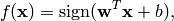
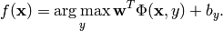
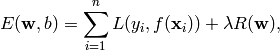

Bolt Online Learning Toolbox¶
| Release: | 1.4 |
|---|---|
| Date: | September 05, 2010 |
| Author: | peter.prettenhofer@gmail.com |
Contents:
Introduction
Bolt features discriminative learning of linear predictors (e.g. SVM or Logistic Regression) using fast online learning algorithms. Bolt is aimed at large-scale, high-dimensional and sparse machine-learning problems. In particular, problems encountered in information retrieval and natural language processing.
Bolt considers linear models (bolt.model.LinearModel) for binary classification,

and generalized linear models (bolt.model.GeneralizedLinearModel) for multi-class classification,

Where  and
and  are the model parameters that are learned from training data.
In Bolt the model parameters are learned by minimizing the regularized training error given by,
are the model parameters that are learned from training data.
In Bolt the model parameters are learned by minimizing the regularized training error given by,

where  is a loss function that measures model fit and
is a loss function that measures model fit and  is a regularization term that measures model complexity.
is a regularization term that measures model complexity.
Bolt supports the following trainers for binary classification:
- Stochastic Gradient Descent (bolt.trainer.sgd.SGD)
- Supports various loss functions
- Supports various regularization terms
PEGASOS (bolt.trainer.sgd.PEGASOS)
For multi-class classification:
Averaged Perceptron (bolt.trainer.avgperceptron.AveragedPerceptron)
- Maximum Entropy (bolt.trainer.maxent.MaxentSGD)
- aka Multinomial Logistic Regression
- Trained via SGD.
Furthermore, a one-versus-all (bolt.trainer.OVA) strategy to combine multiple binary classifiers for multi-class classification is supported.